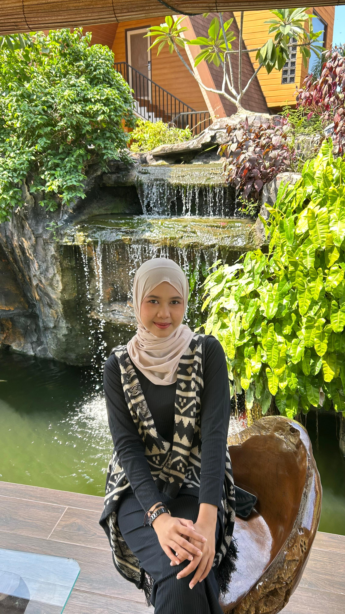
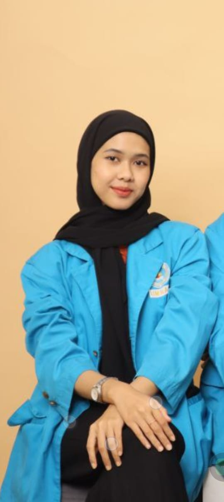

Aplikasi Explore Kepri
Proyek aplikasi eksplorasi Kepulauan Riau — peta, tempat menarik, dan data komunitas.
Informatics Student Web Developer Traditional Dancer
I design and build polished web interfaces and create traditional performance productions that connect communities.


Saya adalah mahasiswa Teknik Informatika yang memiliki minat dalam pengembangan website dan desain antarmuka pengguna. Saya senang menciptakan pengalaman digital yang tidak hanya berfungsi dengan baik, tetapi juga nyaman dan mudah digunakan oleh pengguna. Melalui pengalaman dalam pengembangan frontend menggunakan HTML, CSS, dan JavaScript serta perancangan UI/UX menggunakan Figma, saya terus mengembangkan kemampuan untuk menghasilkan solusi yang menarik dan bermanfaat. Di luar bidang teknologi, saya juga aktif dalam kegiatan organisasi dan seni tari yang membantu membentuk kemampuan komunikasi, kerja sama tim, serta kreativitas dalam menyelesaikan berbagai tantangan.
Proyek aplikasi eksplorasi Kepulauan Riau — peta, tempat menarik, dan data komunitas.
Tarian & pertunjukan — klik link untuk menonton di YouTube.
Gallery — event photography, productions, and live recordings.